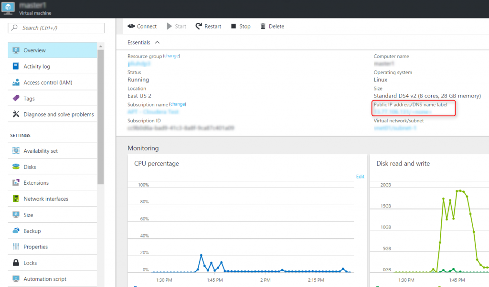
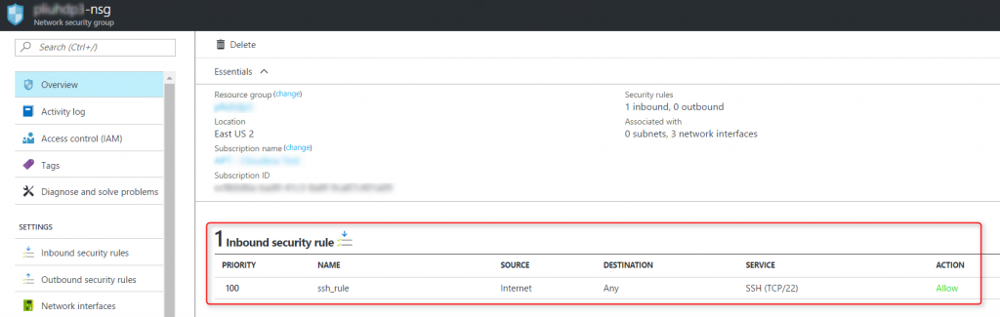
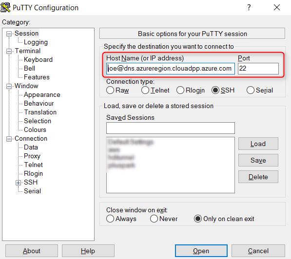
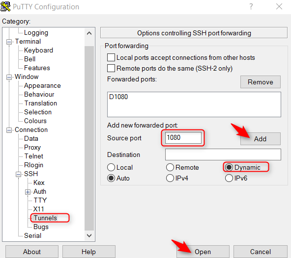

When you deploy virtual machines on Azure, a good practice is to set up Azure
Network Security Groups (NSG) to minimize the exposure of endpoints and limit access to those endpoints to only known IPs from the Internet. In order to access the rest of the endpoints in your Virtual Network (VNet) on Azure, you can set up a SSH tunnel. SSH tunnel is a familiar concept for Linux users. If you are working on Windows, you can follow these steps to access the endpoints in Azure VNet from your laptop or desktop.
Step 1: In Azure portal, navigate to
the VM that you want to tunnel into and copy its public IP or DNS from the Overview blade.

Step 2: Find the SSH port for the VM. This is typically port 22. But you can verify it by opening
Network interfaces blade of the VM, click on the network interface, then
Network security group. Click on the network security group in the blade, and find the inbound security rule of the network security group:

Step 3: Set up a SSH tunnel to Azure
- Download Putty if you haven't already
- Open Putty, enter userName@VMpublicIPorDNS and the SSH port for the VM that you identified in Step 1 and 2:

- In the left navigation panel of Putty, go to Connections, SSH, then Tunnels, enter the tunneling port in Putty, click Add, and then click Open to connect to the VM:

Step 4: Configure the browser to access endpoints in Azure VNet through a SSH tunnel
Configure one instance of your Chrome browser to proxy through the tunnel. The default settings for other Chrome instances won't be affected.
>"C:\Program Files (x86)\Google\Chrome\Application\chrome.exe" --user-data-dir="%USERPROFILE%\chrome-via-socks" --proxy-server="socks5://localhost:1080"
You can now access the private endpoints on Azure VNet from your Chrome browser. For example,
- http://www.whatismyipaddress.com will display that you are using an IP owned by Microsoft
- http://localhost will connect to port 80 of the Azure VM that you are tunneling into
- http://<Azure VNet private IP or host name>:<port> will connect to the specified port of an Azure VM on the same VNet as the VM that you are tunneling into
{kind=link}
{kind=link}
{kind=link}
{kind=link}